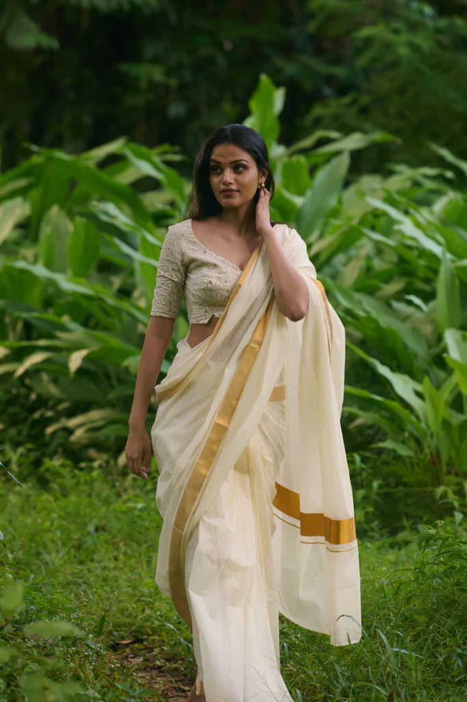
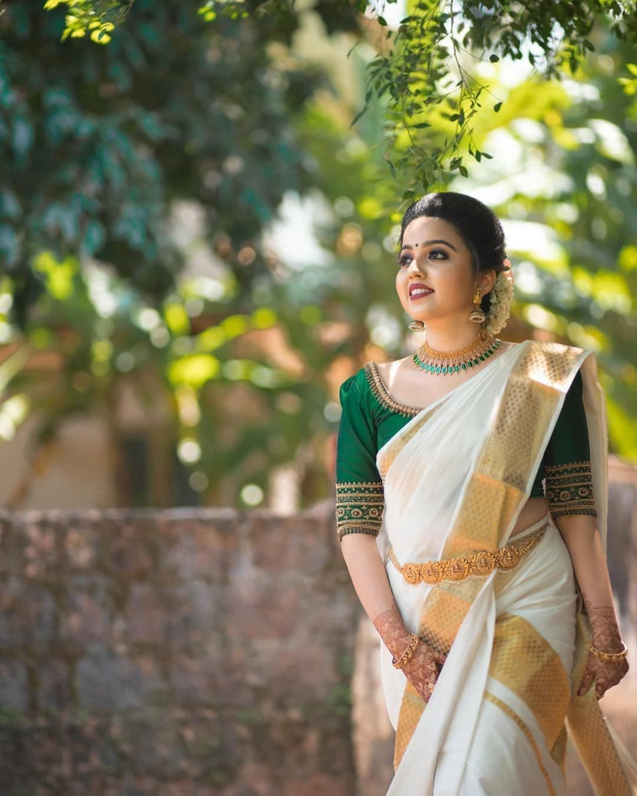
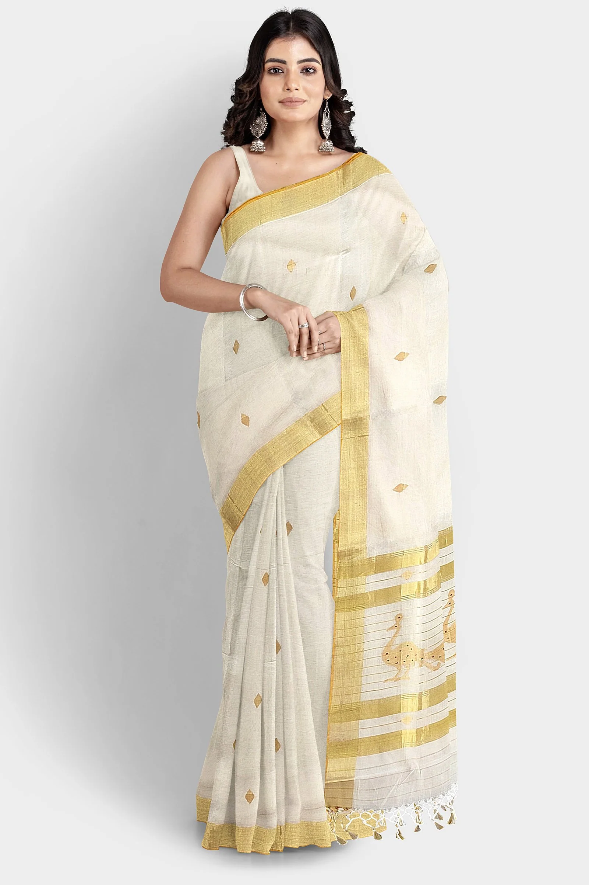
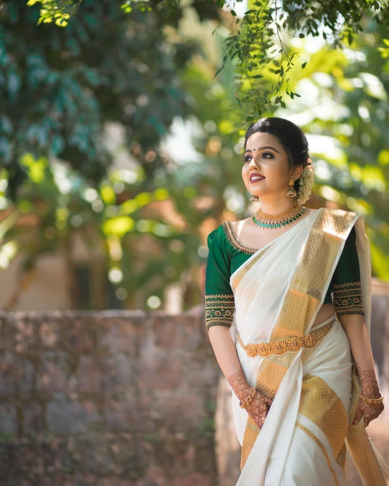
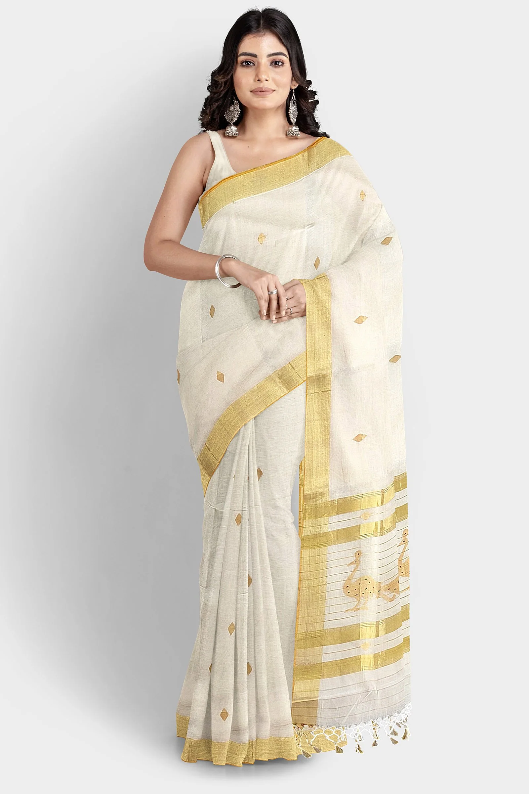

KASAVU SAREE
- Kerela

 



Kasavu saree is a traditional saree from Kerala. It is a beautiful saree with intricate weaving and embroidery. The pattern of the Kasavu saree usually comes in white and light shades of pink and yellow. They come in various colours like black, brown, pink, green, orange, etc. Some of the most popular Kasavu saree designs are Malaika, Ullukkadam, and Nadanthara. It is a floor-length, heavy, pleated garment that takes the form of a skirt.
The fabric traditionally used for this type of saree is silk, but nowadays cotton and other fabrics are also used. The Kasavu sarees are usually associated with big occasions such as weddings or festivals, but they can also be worn on any occasion like in temples or at parties, and are one of the most famous sarees in India among the fashion admirers.